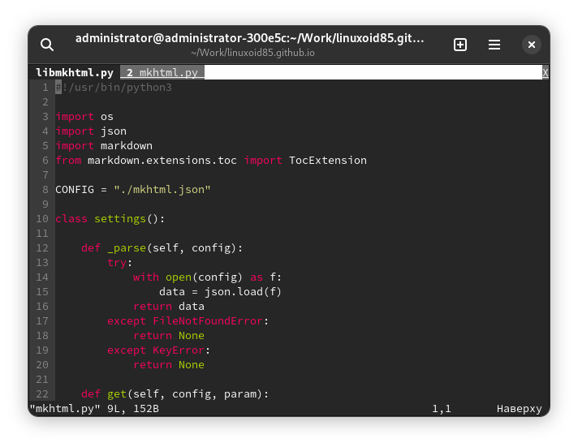

Доброго времени суток! В данной статье хотел бы написать об основных командах текстового редактора Vim, о которых некоторые начинающие пользователи могли не знать. Заранее предупреждаю о том, что здесь я не буду упоминать основы Vim вроде обзора его режимов, приводить информацию о переключении между ними, выходе, сохранении файлов и пр., а приведу те команды и возможности, которыми я пользуюсь наиболее часто.
Это небольшая заметка, которая периодически поправляется и дополняется. Она не предназначена для начинающего пользователя, который никогда не видел Vim, она предназначена для более опытного.
Vim - это продвинутый текстовый редактор, обладающий большим числом возможностей. За счёт несколько режимов работы этот текстовый редактор позволяет повысить продуктивность. Конечно, реальное повышение продуктивности можно заметить тогда, когда освоить этот редактор и настроить его для своих нужд, а также применять необходимые его возможности и функции на практике. Vim - выбор профессионалов, которым важны не рюшечки и красота, а удобство и функциональность.
:set textwidth=кол-во_символов:{диапазон}center ширина:{диапазон}right ширина:{диапазон}left ширинаНапример:
:1,3center 80
Команда выше отформатирует строки с первой по третью по центру. Максимальная длина строки равна 80 символам.
:sp или :split:vsp или :vsplitC-w >C-w <C-w +C-w -C-w q или :q (а также :q!, :wq...)C-w rC-w RC-w h/j/k/lC-w H/J/K/L:tabnew:tabf file* (file* - какой-то шаблон)| В прямом направлении | В обратном направлении |
|---|---|
:tabn |
:tabp |
gt |
gT |
:tabfirst или :tabfir:tablast:tabnew src/api/cp_default.py
:sp src/api/cp_info.py
:vsp src/conf/port.ini
:tabfir
vVC-v| Команда/режим/клавиша/etc | Объяснение |
|---|---|
v |
Выделение символов |
V |
Выделение строк |
C-v |
Блочное выделение |
ypP/{шаблон}?{шаблон}:%s/{старые символы}/{новые символы}/:%s/{старые символы}/{новые символы}/:%s/{старые символы}/{новые символы}/g:%s/{старые символы}/{новые символы}/gc[^1] - здесь C означает клавишу Ctrl
[^2] - {старые символы} - слово или какой-либо другой текст, которые впоследствии будет заменён на {новые символы}. Ввод фигурных скобок ({}) здесь не требуется, во всех примерах (и в форматировании, и в поиске и замене) они предназначены для повышения читабельности.
Вернуться на домашнюю страницу.
Copyright (C) 2022 Michail Krasnov